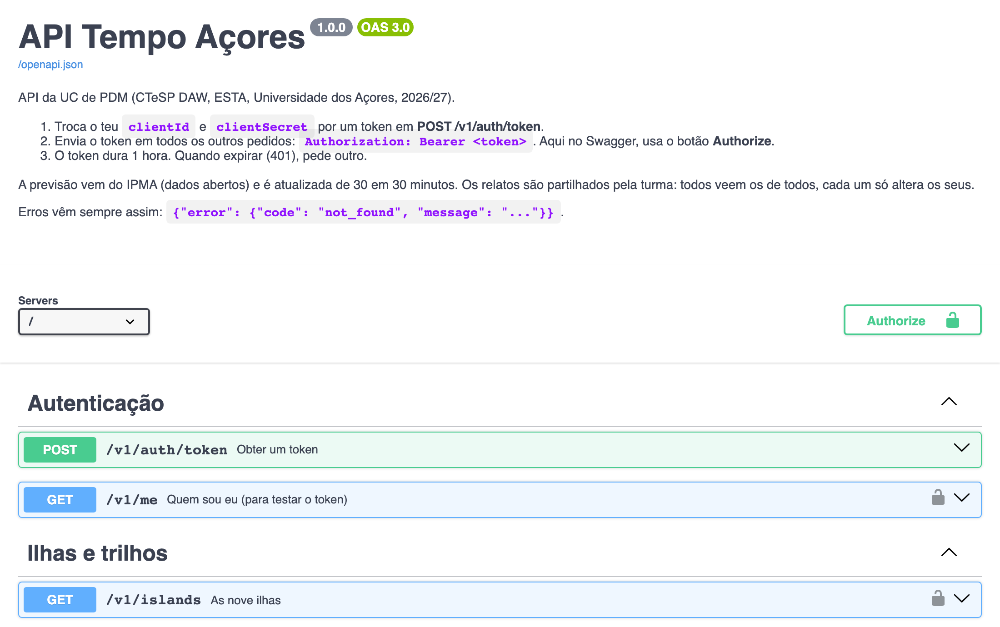
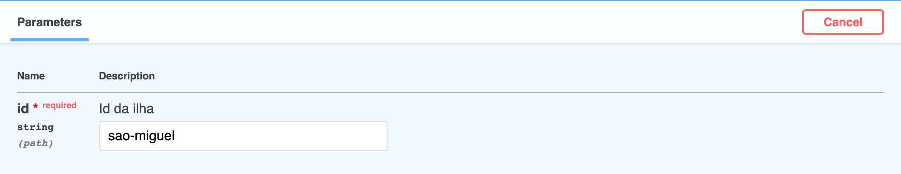
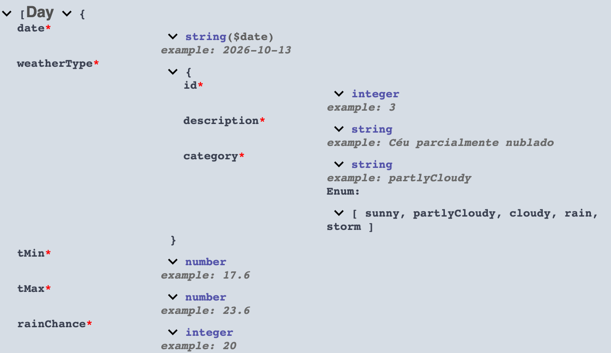
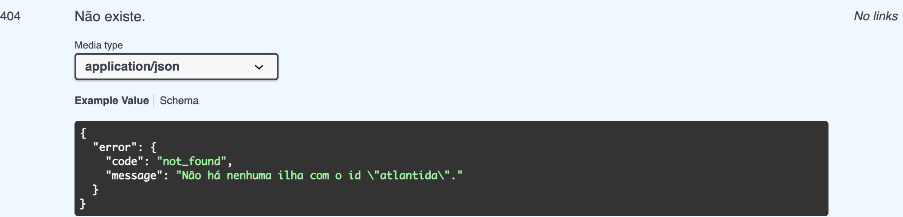

Lesson 12 · Week 6 · Wednesday, 14 October 2026 · 16:00 to 18:00
How an app fetches data from a server without freezing: Future and async/await, HTTP requests, JSON turned into Dart objects, and FutureBuilder. Along the way, we read the course API's Swagger documentation together and try requests in the browser.
Future is and why a network request must never block the app.fromJson and know where parsing usually breaks.FutureBuilder: loading, error and data.Future (one value) from a Stream (many values over time).http.get does not return the response: it returns a Future<Response>, a promise that the response will come later.Future is in one of three states: uncompleted, completed with a value or completed with an error.print('1. before the request');
final future = http.get(url); // the request goes out, the app carries on
print('2. the request has gone out');
final response = await future; // the function waits here for the response
print('3. arrived: ${response.statusCode}');await, can the user scroll in the app?async and awaitFuture<List<Island>> fetchIslands(String token) async {
final response = await http.get(
Uri.parse('$baseUrl/v1/islands'),
headers: {'Authorization': 'Bearer $token'},
);
final list = jsonDecode(response.body) as List<dynamic>;
return list
.map((item) => Island.fromJson(item as Map<String, dynamic>))
.toList();
}async marks the function: it always returns a Future, even when the return gives back a list.await can only be used inside an async function. It reads top to bottom like normal code.Future with an error. You catch it with try/catch around the await.await is the most common mistake: you end up holding a Future instead of the response.GET reads and never changes anything. POST creates. PUT replaces. DELETE deletes.GET, PUT and DELETE are; POST is not. A failed GET can be repeated; a repeated POST can create two reports, or charge twice.For the tests: idempotency decides what the app may repeat on its own when the network fails.
| Code | Means | What the app does |
|---|---|---|
| 200, 201, 204 | It worked; 201 created something; 204 has no body | Use the data |
| 400, 404, 422 | The request is wrong or the resource does not exist | Our bug or an empty state; do not repeat |
| 401, 403 | No valid token; no permission | 401: ask for a new token; 403: repeating does not help |
| 429 | Too many requests | Wait and repeat later |
| 5xx | Server error | Repeat later, show old data |
In the course API, when something goes wrong the body explains the error in Portuguese:
{
"error": {
"code": "not_found",
"message": "Não há nenhuma ilha com o id \"atlantida\"."
}
}For the tests: 4xx is the request's fault, 5xx is the server's fault, 429 is a limit.
| REST | GraphQL | gRPC | WebSockets | |
|---|---|---|---|---|
| Format | JSON over HTTP, one URL per resource | One /graphql route, the client writes the query | Binary Protobuf over HTTP/2 | Connection open in both directions |
| Strength | Simple, HTTP caching, tools everywhere | The client asks only for the fields it wants | Fast, generated contracts | The server sends when there is something new |
| In mobile | Almost everything; the course API | Apps with many screens (GitHub, Shopify) | Internal services, Google apps | Chat, stock prices, games, live maps |
| Cost | Fetching too much or too little data | Hard caching, more complex server | Hard to inspect | Battery, connection that drops and comes back |
For the tests: REST is the norm in mobile; GraphQL avoids fetching too much data; gRPC is binary and fast; WebSockets are for real time.
| Request | Returns |
|---|---|
POST /v1/auth/token | The token, from your clientId and clientSecret |
GET /v1/islands | The nine islands, with the photo in imageUrl |
GET /v1/islands/{id}/forecast | The 5-day forecast from IPMA |
GET /v1/trails · GET /v1/reports | The trails · the class reports |
Address: https://api-pdm.sublimecipher.com. Full documentation on the API page; interactive documentation at /docs.

/openapi.json): a file that describes every route, its parameters, its data and its errors. It is the source of truth.GET /v1/islands.
id is required (* required), it is text and it goes in the path: /v1/islands/sao-miguel/forecast. Others go in the query: /v1/trails?islandId=faial.curl, the URL, the status code and the response body. If the curl has no Authorization: Bearer line, Authorize was missed.
* means the field is always there.string, integer, number, objects inside objects ({ }) and lists ([Day]). Enum is the closed list of values: it becomes an enum in Dart.
/v1/islands/{id}/forecast they are 200, 401, 404 and 502.code for the program to decide (not_found, unauthorized...), message to show to the person.https://api-pdm.sublimecipher.com/docs. Your clientId and clientSecret are in issue #1 of your pdm-miniprojeto repository.POST /v1/auth/token, press Try it out, paste both into the request and press Execute. You must get 200 and an accessToken.GET /v1/me, Try it out, Execute: your name must show up. When it does, raise your hand.curl shown after Execute and, in Postman, press Import and paste it.Nobody moves on to part 2 without their name on screen.
The API now has deliberate bugs: responses that do not follow the Swagger contract. Each mission tells you where to look; you find the bug.
| Mission | Request | Clue |
|---|---|---|
| 1 | GET /v1/islands | The operation's description says how many islands there are. Count the ones that arrive. Which one is missing? |
| 2 | GET /v1/trails?islandId=faial | Two trails arrive. One has a field missing. Which one, and does the schema say it is required? |
| 3 | GET /v1/trails?islandId=sao-miguel | One field has the wrong type. Compare each value with its type in the Schema. |
| 4 | GET /v1/islands/pico/forecast | One day has a value that is not in the schema's Enum list. |
| Extra | GET /v1/reports | No clues. Is everything right? |
For each bug, write down three things: the request, what the contract says and what arrived.
The response arrives as text. Before it becomes an object the app can use, it always goes through the same two steps: decode and give it types.
jsonDecode goes from text to an untyped structure; fromJson goes on to typed objects. From here on the app only sees objects.Island{
"id": "sao-miguel",
"name": "São Miguel",
"imageUrl": "https://api-pdm.sublimecipher.com/static/islands/sao_miguel.jpg",
"trailCount": 3
}factory Island.fromJson(Map<String, dynamic> json) {
return Island(
id: json['id'] as String,
name: json['name'] as String,
imageUrl: json['imageUrl'] as String,
);
}{
"date": "2026-10-14",
"weatherType": {
"id": 7,
"description": "Aguaceiros/chuva fracos",
"category": "rain"
},
"tMin": 20.0,
"tMax": 24.2,
"rainChance": 57,
"wind": {
"direction": "SW",
"class": 2,
"description": "Moderado"
}
}Map; a list is a List<dynamic> that you walk through with map.fromJson converts them (DateTime.parse, values.byName).DayForecast.fromJsonfactory DayForecast.fromJson(Map<String, dynamic> json) {
final weather = json['weatherType'] as Map<String, dynamic>;
final wind = json['wind'] as Map<String, dynamic>;
return DayForecast(
date: DateTime.parse(json['date'] as String),
type: WeatherType.values.byName(weather['category'] as String),
tMin: (json['tMin'] as num).toDouble(),
tMax: (json['tMax'] as num).toDouble(),
rainChance: json['rainChance'] as int,
windClass: wind['class'] as int,
);
}windKmh becomes windClass.| The API sends | The code expects | What happens | How to write it |
|---|---|---|---|
"tMin": 20 | as double | Error: 20 is an int, not a double | (json['tMin'] as num).toDouble() |
missing field or null | as String | Error: null is not a String | as String? and a default value |
"category": "fog" | values.byName | Error: a value the enum does not have | Look it up and use a default value |
"date": "14/10/2026" | DateTime.parse | FormatException | Agree the format with the API (ISO 8601) |
| a list | as Map | Type error | Look at the real response in /docs before writing |
fromJson completes the Future with an error: the screen shows the error message instead of the data, but the app does not close./openapi.json) says what can be missing. If it is not in the contract, do not count on it."category": "fog" for a single day, what does the user see on the forecast screen?void _check(http.Response response) {
if (response.statusCode >= 200 && response.statusCode < 300) return;
final body = jsonDecode(response.body) as Map<String, dynamic>;
final error = body['error'] as Map<String, dynamic>;
throw ApiException(response.statusCode, error['message'] as String);
}
Future<List<Island>> fetchIslands(String token) async {
final response = await http
.get(
Uri.parse('$baseUrl/v1/islands'),
headers: {'Authorization': 'Bearer $token'},
)
.timeout(const Duration(seconds: 10));
_check(response);
final list = jsonDecode(response.body) as List<dynamic>;
return list
.map((item) => Island.fromJson(item as Map<String, dynamic>))
.toList();
}http does not throw on a 404 or a 500: the response arrives anyway. Checking the statusCode is your job.timeout, a request in a tunnel can hang for minutes. With it, after 10 s the Future completes with an error.Future<String> fetchToken(String clientId, String clientSecret) async {
final response = await http.post(
Uri.parse('$baseUrl/v1/auth/token'),
headers: {'Content-Type': 'application/json'},
body: jsonEncode({'clientId': clientId, 'clientSecret': clientSecret}),
);
_check(response);
final json = jsonDecode(response.body) as Map<String, dynamic>;
return json['accessToken'] as String;
}const clientId = String.fromEnvironment('CLIENT_ID');
const clientSecret = String.fromEnvironment('CLIENT_SECRET');flutter run -d chrome \
--dart-define=CLIENT_ID=pdm-ab12cd \
--dart-define=CLIENT_SECRET=your-secretPOST the body goes as JSON: jsonEncode does the opposite of jsonDecode.--dart-define passes it in when you run the app.FutureBuilder: the screen that waitsclass _IslandsScreenState extends State<IslandsScreen> {
late final Future<List<Island>> _islands;
@override
void initState() {
super.initState();
_islands = fetchIslands(widget.token); // once, not in build
}
@override
Widget build(BuildContext context) {
return FutureBuilder<List<Island>>(
future: _islands,
builder: (context, snapshot) {
if (snapshot.connectionState != ConnectionState.done) {
return const Center(child: CircularProgressIndicator());
}
if (snapshot.hasError) {
return Center(child: Text('${snapshot.error}'));
}
final islands = snapshot.data!;
return ListView.builder(
itemCount: islands.length,
itemBuilder: (context, i) => ListTile(
leading: Image.network(islands[i].imageUrl, width: 56),
title: Text(islands[i].name),
),
);
},
);
}
}FutureBuilder: what mattersbuilder runs again every time the Future changes state. The snapshot tells you which state it is in.connectionState), error (hasError, error) and data (data). The three states of the Future, drawn on screen.Future is created once, in initState. If you write future: fetchIslands(token) inside build, every rebuild makes a new request.Image.network instead of Image.asset: the photo also comes from the network, and Flutter caches it.Future inside setState.build run? And how many requests would the server get if the Future were created in there?Future<T> | Stream<T> | |
|---|---|---|
| How many values | One, once | Many, over time |
| How you wait | await | await for or listen |
| Widget | FutureBuilder | StreamBuilder |
| Examples | Today's forecast, the token, a photo | The GPS position, chat messages, stock prices, a moving bus |
Future is a parcel: it arrives once. A Stream is a subscription: it arrives every time there is a new issue, until you cancel.StreamBuilder has the same snapshot as FutureBuilder, but the builder runs again for every new value.http with FutureBuilder, step by step.Future.